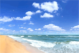

Навигация по сайту
Навигация по сайту
Все что я знаю про отдых на море
 Сколько себя помню в детстве - мне всегда хотелось на море! Море казалось мне чем-то недосягаемым, каким то волшебным местом, где сбываются мечты. И чем старше я становилась, тем навязчивее была идея поехать на море...
Вышло так, что первый раз я приехала в отпуск на море уже взрослой - мне было 22 года. Приехала и...влюбилась. Сразу же! И навсегда... С тех пор моя любовь к нему не только не проходит, но со временем становится все сильнее! Каждый год я с нетерпением жду отпуска, что бы опять поехать на море, выйти в первый же день, только приехав, не успев разобрать вещи, на пляж, неважно какая будет погода, зайти в него и сказать - здравствуй, море, я вернулась к тебе! Каждый год с завидным упорством я уговариваю домашних ехать в отпуск именно на море.
Ведь отдых на юге - это не только здорово, но еще и очень полезно! Отдых на море полезен и большим и маленьким, даже морской воздух сам по себе очень лечебный, не говоря уже о том, что только на юге можно совместить столько всего, что делает нас здоровыми. Это ультрафиолет, лечебные грязи, воздух, пропитанный можжевельниками и насыщенный йодными частицами, солнышко, которое прогреет каждую частичку вашего тела!!!
Кто то скажет, что это слишком дорогое удовольствие, но можно найти очень недорогие варианты, сэкономить на чем то… но зато весь год вы будете с теплом вспоминать свой отдых, проведенный на море. Конечно, здорово съездить куда-нибудь на север, в Карелию, на Байкал, но это все не для меня - мое сердце навсегда принадлежит морю! Что бы не говорили, куда бы не приглашали меня, но на следующий год я обязательно буду уговаривать свою семью в отпуск ехать не море!!! И знаете, они всегда только ЗА!
В отпуск на море
Отпуск! Отпуск! Отпуск…и? не сидеть же в душном городе - надо ехать! Куда? На море!! Заграница отпадает сразу же! Во-первых, без загранпаспорта поехать куда-то проблематично, заниматься...
Автор: ЛюдмилаОтпуск! Отпуск! Отпуск…и? не сидеть же в душном городе - надо ехать! Куда? На море!! Заграница отпадает сразу же! Во-первых, без загранпаспорта поехать куда-то проблематично, заниматься...
Автор: Людмила Новые материалы
Новые материалы Опрос
Опрос